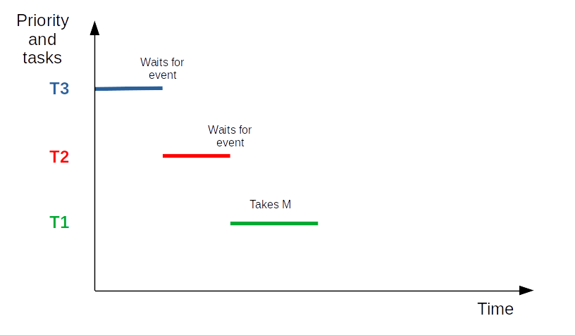
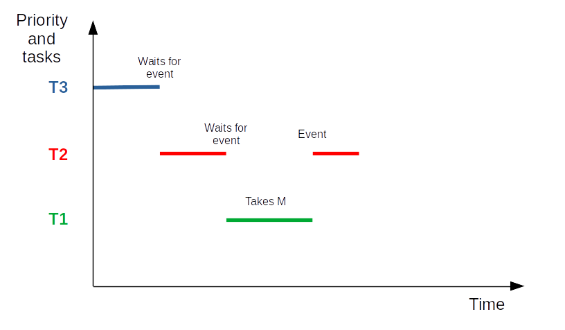
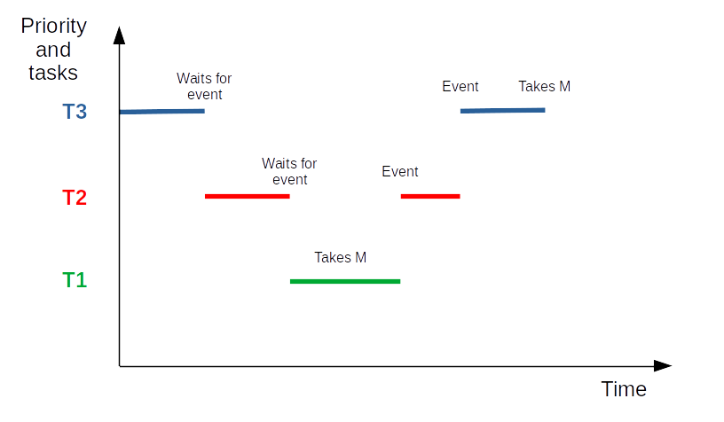
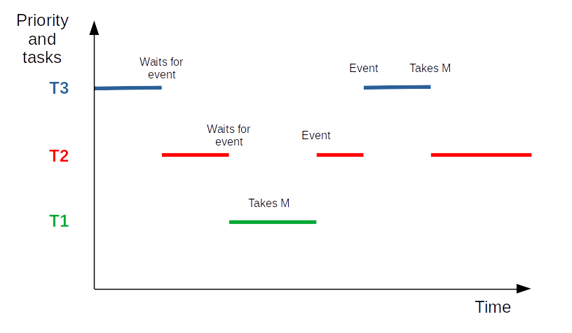
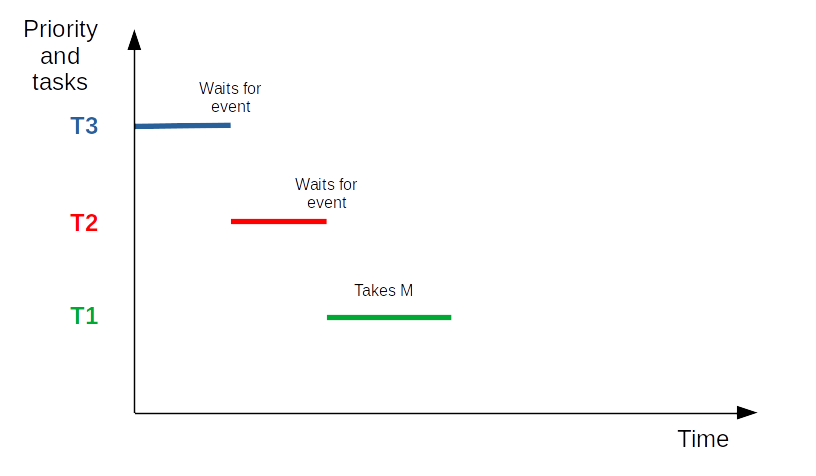
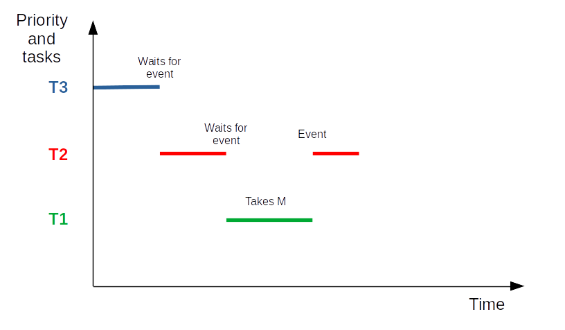
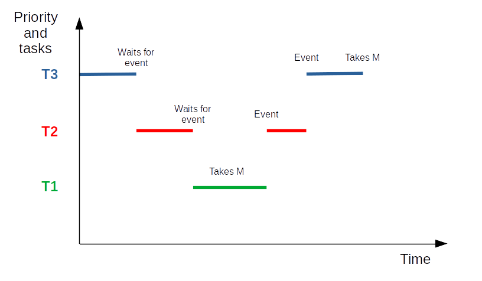
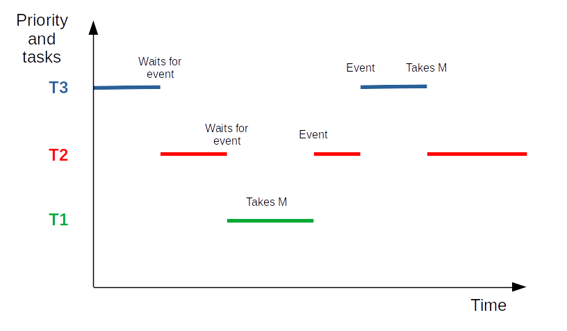

Introduction to real time operating systems
Pascal Bodin
Document history
| When | What |
|---|---|
| 17-May-2022 | First version |
This work is licensed under a Creative Commons Attribution-NonCommercial-ShareAlike 4.0 International License
Credits
- reveal.js - Copyright (C) 2020 Hakim El Hattab
- Freepik from www.flaticon.com
Contents
Foreword
This presentation is about how to use an RTOS (Real Time Operating System), not about how to design one, nor about how they work.
Reminder about bare metal
- processing is distributed over ISRs and a background task
- all the code has to be written:
- the application-level code
- the supporting code:
- sharing data between ISR and background task
- structuring application code in several units of execution
- sharing data between these units
- handling different priorities
- ensuring that time constraints are met
- etc.
What is an RTOS?
Something that provides the supporting code presented in previous slide!
More precisely
RTOS = OS intended for real-time applications.
- Provides minimal latency when handling events
- Guarantees predictable response time
Benefits
- Provides a way to split application code in several execution blocks
- Allows to prioritize execution blocks
- Application architecture easier to design: several execution blocks can "simultaneously" process events
- Can reuse existing middleware (TCP/IP stack, flash file system, etc.) more easily
- Provides time handling function
- Provides a common reference framework for teams of several developers
- Makes application code more portable (to different hardware targets)
- ...
Drawbacks
- Requires more flash memory (from a few KB to a few tens of KB)
- Requires more RAM (fixed quantity + quantity depending on execution blocks)
- Consumes some processing power (a few %)
- Associated learning curve must be taken into account
- Brings in a software dependency
Components
Usual components:
- Scheduler - assigns computing resource to the execution blocks (tasks or threads)
- Services allowing concurrent accesses to shared resources
- Communication services letting tasks exchange data
- Synchronization services
- Time services
- Memory allocation services
- Middleware: Wi-Fi stack, Bluetooth stack, TCP/IP stack, USB stack, flash file system, GUI, etc.
GUI: Graphical User Interface
Tasks
Task: a long-living execution block.
- The application is implemented by several tasks.
- These tasks may have to exchange data and to synchronize.
- Each task has its own execution context
- Each task can be assigned a priority
- Each task is assigned a "fair" proportion of processing time by the scheduler
A task may be in one of several states. Usually:
- Ready: the task is ready to run, but another one is using the processor
- Running: the task is being executed
- Blocked (or Waiting): the task is waiting for an event
- Suspended: the task won't use the processor anymore
For FreeRTOS:

For Zephyr OS:

On a microcontroller with one core: only one task can be executed at a given time.
⇒ Difference between concurrency and parallelism:
- Concurrency: several tasks appear to be running at the same time
- Parallelism: several tasks are really running at the same time
The scheduler is the magic behind concurrency.
Scheduling method depends on the RTOS.
For FreeRTOS:
- Fixed priority - task priority is not changed (excepted for priority inheritance - see farther)
- Preemptive - if a higher priority task enters ready state (due to some event), and a lower priority task is being executed, the scheduler stops it and starts the higher priority one
- Round-robin - every task in the set of tasks with same priority is guaranteed to be executed after some time
- Time sliced - switching between tasks with same priority occurs on a periodic basis, after a fixed time period
When a task requests to wait for some event:
- The task enters the blocked state
- The scheduler schedules the task with the highest priority, having waited for the longest time period
When a task with a given priority loops, for instance polling for an event without waiting for it:
- Tasks with lower priority will never be executed.
API example
task_handle_t task_create(...)status_t task_delete(task_handle_t th)status_t task_priority_set(task_handle_t th)status_t task_suspend(task_handle_t th)status_t task_resume(task_handle_t th)...
Concurrency control
Aim
Generate correct results for concurrent operations on same resource.
Shared resources
- Hardware: interfaces and peripherals
- Data structures used to transfer information between tasks, and between ISRs and tasks
Examples: a serial link peripheral, a ring buffer
Critical section
- Part of a program that must be protected from being executed by concurrent tasks
- In other words: it provides atomic access to a shared resource
Simplest implementation
- For a system with only one processor: disabling/enabling interrupt(s)
But better to use the RTOS services described in next pages, in any case.
Mutex (MUTual EXclusion)
- Guards a resource
- Can be imagined as containing a token
- A task which wants to access a given resource requests the token from the mutex:
- If it is available: OK
- If it is not available: the task stays blocked on the mutex until the token is available or a timeout occurs
- A task which has obtained the token must release it once it stops accessing the resource
This is a cooperation agreement. Creating a mutex does not protect a resource from a task that would not use the mutex!
API example
mutex_handle_t mutex_create()status_t mutex_take(mutex_handle_t mh, timeout_t timeout)status_t mutex_give(mutex_handle_t mh)status_t mutex_delete(mutex_handle_t mh)
An ISR must not try to take a mutex.
Potential problem
Context:
- A task T3, of high priority, shares a resource with T1, a task of low priority
- The resource is protected by a mutex, M
- A task T2, of medium priority, performs some continuous processing and does not wait for any event
Successive actions

 







- The highest priority task, T3, is executing. Then it waits for an event.
- The medium priority task, T2, can now execute. Then it waits for an event.
- The low priority task, T1, can now execute. Then it requests to take M, takes it, and goes on executing.
- Event for T2 is received. The scheduler schedules T2.
- Event for T3 is received. The scheduler schedules T3. Then T3 requests to take M.
- But M is taken by T1. So T3 enters blocked state. And the scheduler schedulesT2.
Result
- T2, of lower priority than T3, runs, instead of T3, as if it was of higher priority
- This is the problem of priority inversion
A (partial) solution
- If a high priority task blocks while attempting to take a mutex that is currently held by a lower priority task, then the priority of the task holding the mutex is temporarily raised to that of the blocking task
- This is priority inheritance
- Does not entirely solve the problem. The real solution is a good system design
A real-life example of priority inversion
- In 1997, Pathfinder landed on Mars
- After some time, the spacecraft began experiencing system resets and loosing sensor data
- A remote (!) debug session found the source of the problem: priority inversion
Another potential problem
Context:
- Task T1 would like to take a first mutex, MA and then a second one, MB
- Task T2 would like to take MB and then MA
Successive actions
- T1 requests to take MA, and takes it.
- T2 requests to take MB, and takes it.
- T1 requests to take MB and stays blocked on it.
- T2 requests to take MA and stays blocked on it.
- Deadlock!
Solution
A good system design.
Semaphore
- Guards a set of resources
- Contains a variable counting the number of free resources
- A task which wants to access one of the resources calls the semaphore take function. This decrements the variable
- At the end of the access, give must be called. This increments the variable
API example
sem_handle_t sem_create(int max_count, int initial_count)status_t sem_take(sem_handle_t sh, timeout_t timeout)status_t sem_give(sem_handle_t sh)status_t sem_delete(sem_handle_t sh)
An ISR must not try to take a semaphore.
Mutex vs semaphore
- A mutex can be given only by the task that has taken it ⇒ simple mutual exclusion
- A semaphore can be given by any task ⇒ resource management, synchronization
Communication
By communication we mean:
- Exchanging data between tasks
- Exchanging data between ISRs and tasks
Exchanging data is usually asynchronous: data producer may produce data at some time, while data consumer may try to consume data at another time.
Data exchange must be protected so that the consumer always gets consistent data.
It is good to provide a mechanism letting the consumer know that there is some data to consume.
Queues
- Used to send messages between a source and a destination

Usually:
- A queue is FIFO (Firt In First Out)
- The write operation returns immediately
- Trying to read from an empty queue blocks
- Trying to write into a full queue blocks or returns an error
- Messages are of fixed size (but may contain pointers)
- Messages are passed by copy
API example
queue_handle_t queue_create(int queue_length, int message_size)status_t queue_send(queue_handle_t qh, void *message, timeout_t timeout)status_t queue_receive(queue_handle_t qh, void *message, timeout_t timeout)status_t queue_delete(queue_handle_t qh)
A good way to prevent deadlocks
- Do not use critical sections to provide access to shared resources
- Use message queues to implement server tasks providing access to the resources
Synchronization
Data synchronization
- To ensure data integrity
- Tools: mutexes and semaphores
Task synchronization
- To let a task wait for one or more other tasks
- Tools: semaphores
- Tools: event flags and event groups
Event flags and event groups
- Event flag: a bit used to signal an event
- Event group: a set of event flags
- A task may wait on one or more event flags, using an event group
API example
event_group_handle_t event_group_create()event_bits_t event_group_set_bits(event_group_handle_t eh, event_bits_t bits)event_bits_t event_group_clear_bits(event_group_handle_t eh, event_bits_t bits)event_bits_t event_group_wait_bits(event_group_handle_t eh, event_bits_t bits, timeout_t timeout)status_t event_group_delete(event_group_handle_t eh)
Time
Timer
- Software timers: service provided by the RTOS, based on at least one hardware timer
- No limitation (excepted RAM) on the number of timers
- When the timer reaches its duration, it calls its callback function
- The callback function is passed a parameter that allows to identify the timer
- Do not block in the callback function!
API example
timer_t timer_create(timer_callback_t function)status_t timer_start(timer_t timer, time_period_t duration)status_t timer_stop(timer_t timer)status_t timer_delete(timer_t timer)
Time functions
- Time is local to the microcontroller
- Function to get current (local) time
- Function to convert time (e.g. POSIX format)
Memory allocation
Reminder
Variables declared in functions are allocated on the stack.
- These variables are known as automatic
- They don't exist anymore when the function terminates
- (Unless the
staticstorage class is used...)
Automatic variables may not be enough
- An application may require an amount of memory not known beforehand
- An application may require to allocate some memory to some task, and reallocate it to some other task later on
- Some data structures and associated operations may require dynamic memory (linked lists...)
Dynamic memory allocation
- Memory is allocated when the application requests it
- The application must release memory when no more used
- The memory is allocated from the heap
- The standard C library provides
malloc()andfree()functions - But usually they can't be used in a concurrent environment
- ⇒ Usually, the RTOS provides its own functions
Drawbacks of dynamic memory allocation
- Several interwoven allocation/release cycles of memory blocks of different sizes may lead to heap fragmentation
- Allocation and release times are not deterministic (but not as bad as garbage collecting for higher-level languages)
⇒ If possible, do not use dynamic memory allocation
Middleware
Quite often, developing an application requires more than an RTOS:
- Storing data in flash memory
- Handling integrated radio interfaces (Wi-Fi, Bluetooth...)
- Using one of the IP protocols (TCP, UDP...) over some networking layer
- Using some messaging protocols (MQTT, CoAP...)
- Logging
- Updating the code in the field (FUOTA - Firmware Update Over The Air)
- Artifical Intelligence tooling
- etc.
The availability of such middleware components depends on the RTOS.
Some components may be generic (RTOS independent) but may require some integration.
⇒ Check the ecosystem against your needs before choosing an RTOS